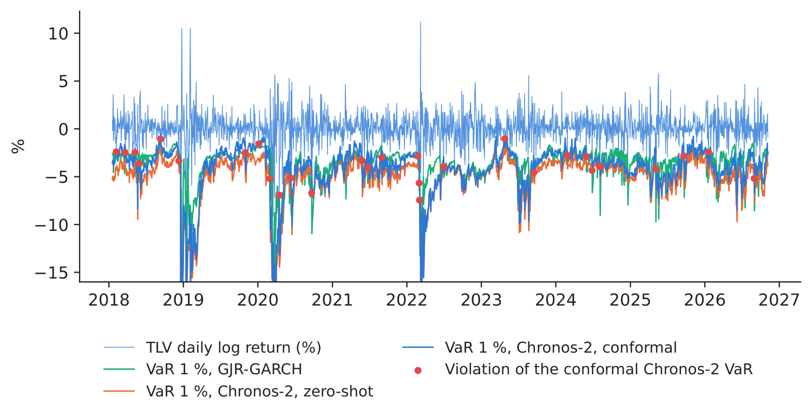
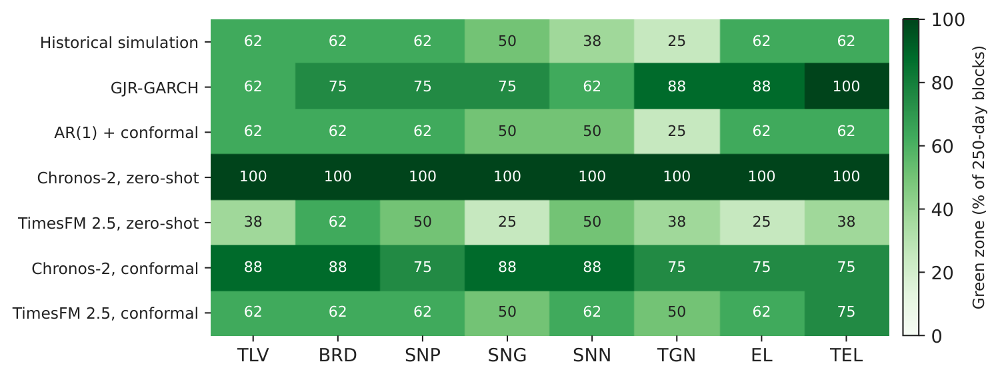
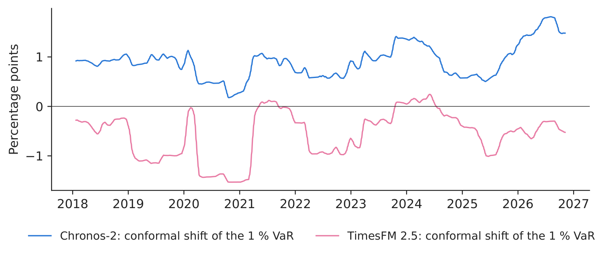
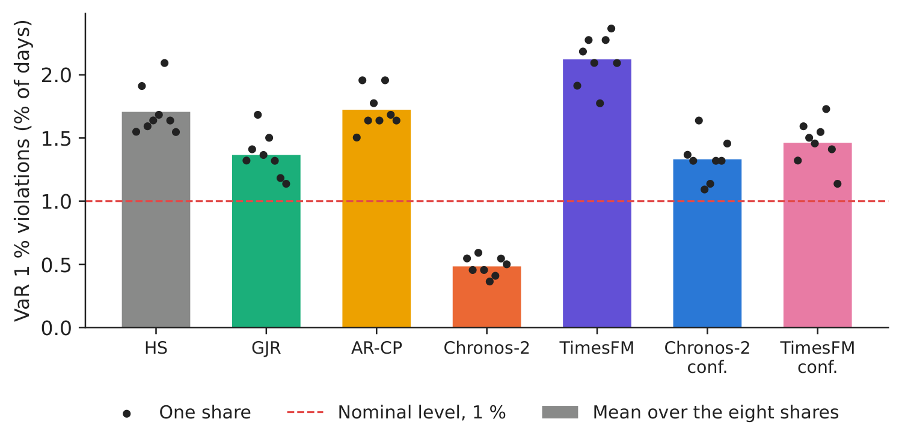

Case study 6 · Lecture 13
Can foundation models manage risk?
Prof. dr. Daniel Traian PELE
Bucharest University of Economic Studies, Department of Statistics and Econometrics
Romanian Academy, Institute for Economic Forecasting
The paper
Jheng, S.-L., Tak, R., Găman, Ș., Mazurencu-Marinescu-Pele, M. & Pele, D. T. (2026). Can foundation models manage risk? Zero-shot VaR and ES forecasting with conformal calibration in CEE markets. Economic Computation and Economic Cybernetics Studies and Research, 60(2), 267–290. doi:10.24818/18423264/60.2.26.14
Materials
The business question
The risk committee of a Romanian asset manager sets, every evening, a daily loss limit for each equity position: the Value-at-Risk (VaR), the loss that should be exceeded on only 1 % of the days, and the Expected Shortfall (ES), the average loss on the worst days. A vendor offers a pretrained time series foundation model that forecasts any series “out of the box”. The chief risk officer asks two questions: can a model that has never seen Romanian shares produce a daily VaR that passes the Basel backtests, and what must be added before it can be used for a limit? Too low a limit triggers breaches, capital surcharges and questions from the regulator; too high a limit ties up capital and blocks trading.
What the paper did
Question. Can modern time series foundation models (TSFMs) produce regulatory-grade VaR and ES forecasts for Central and Eastern European (CEE) markets in a zero-shot setting, and can conformal calibration bridge any remaining gap to full Basel compliance (p. 268)?
Data. Ten daily return series from five CEE markets: the stock indices BET (Romania), WIG20, PX, BUX and SOFIX and the exchange rates of the euro against the Romanian leu (RON), the Polish zloty, the Czech koruna and the Hungarian forint, and of the American dollar against the Bulgarian lev, January 2007 – December 2025; out-of-sample period January 2018 – December 2025, about 2,000 trading days (Table 1, p. 270–271). All series are fat-tailed (Table 2).
Method. Three TSFMs used zero-shot with a context of 512 days — Chronos-2 (120 million parameters), TimesFM 2.5 (Time Series Foundation Model, 200 million) and Moirai 2.0 (11.4 million) — against historical simulation (HS), a GJR-GARCH(1,1) model with skewed-t innovations, and autoregressive integrated moving average (ARIMA) and LSTM (Long Short-Term Memory) forecasts turned into VaR by split conformal prediction (Table 3, p. 273). Chronos-2 and TimesFM 2.5 return nine deciles; a Student-t distribution fitted to them by quantile matching gives the 1 % and 2.5 % VaR and ES (section 3.2.3). A rolling conformal wrapper with a 250-day calibration window corrects each TSFM (eqs. 5–6). Backtests: Kupiec, Christoffersen, the Acerbi–Székely \(Z_2\) test for ES, the Basel traffic light and Diebold–Mariano (DM) tests on the tick loss (section 3.2.5).
Main findings of the paper.
- All three raw TSFMs reach competitive Basel Green-zone rates zero-shot; Chronos-2 attains 90 %, matching GJR-GARCH, with an average 1 % violation rate of 1.09 % (p. 276, Table 4).
- Conformal calibration lifts Chronos-2-Conf to the highest Green-zone rate, 96.7 %, and to the best ES statistic, an average \(Z_2\) of 0.23, the only positive value; raw TSFMs have \(Z_2\) between \(-\)0.71 and \(-\)1.18 (Table 5, p. 279–280).
- Conformalised foundation models rank first by Green-zone rate and have lower tick losses than most benchmarks in the Diebold–Mariano tests (Figures 5–6, p. 281–282); during the COVID-19 and 2022 war episodes they recover faster, because the rolling scores absorb recent errors (p. 282–283).
- The wrapper “requires no retraining or proprietary data” and works as a post-processing layer on any foundation model (p. 283).
Related work of our group for Lecture 13: language models as zero-shot risk models (Pele et al., 2026, Expert Systems with Applications 295, 128676, doi:10.1016/j.eswa.2025.128676; Case 5).
The method, step by step
Intuition first
A foundation model has read millions of series from energy, retail, traffic and weather; it “knows” what usually follows a calm or a turbulent stretch, and returns a whole set of quantiles for tomorrow. It has not seen Romanian shares, so its quantiles may be slightly too narrow or too wide. Conformal calibration is a thermostat: it looks at how often the model's VaR was breached in the last 250 days and moves today's VaR by exactly the amount that would have produced the right breach rate.
Let \(r_t=100\ln(P_t/P_{t-1})\) be the daily log return in percent, with \(P_t\) the closing price adjusted for dividends and splits. For a long position, \(\mathrm{VaR}_{\alpha,t}=F_t^{-1}(\alpha)\), the \(\alpha\)-quantile of the forecast distribution \(F_t\) of \(r_t\) given the information up to \(t-1\), and \(\mathrm{ES}_{\alpha,t}=\mathbb{E}[r_t\mid r_t\le\mathrm{VaR}_{\alpha,t}]\) (paper eqs. 1–2; both are negative returns). We use \(\alpha=1\,\%\) and \(2.5\,\%\). Benchmarks. HS: the empirical \(\alpha\)-quantile and tail mean of the last \(W=250\) returns. GJR-GARCH: \(r_t=\mu+\varepsilon_t\), \(\varepsilon_t=\sigma_t z_t\), \(\sigma_t^2=\omega+a\,\varepsilon_{t-1}^2+\gamma\,\varepsilon_{t-1}^2\mathbf{1}(\varepsilon_{t-1}<0)+\beta\sigma_{t-1}^2\) (eq. 3), \(z_t\) skewed-t with \(\nu\) degrees of freedom and asymmetry \(\lambda\); \(\mathrm{VaR}=\mu+\sigma_t q_\alpha(z)\), \(\mathrm{ES}=\mu+\sigma_t\,\mathbb{E}[z\mid z\le q_\alpha(z)]\); re-estimated every day on the last 250 returns. AR(1) with conformal prediction: \(\hat r_t=c+\phi r_{t-1}\) estimated on the last 250 days, \(\mathrm{VaR}_{\alpha,t}=\hat r_t+Q_\alpha(\{r_i-\hat r_i\}_{i=t-250}^{t-1})\) (eq. 4), with \(Q_\alpha\) the empirical \(\alpha\)-quantile. Foundation models. Given the last 512 returns, Chronos-2 and TimesFM 2.5 return the deciles \(q_k\) at \(\tau_k=0.1,\dots,0.9\). We fit \((\mu,\sigma,\nu)\) by \(\min\sum_{k=1}^{9}\big(q_k-\mu-\sigma\,t_\nu^{-1}(\tau_k)\big)^2\), with \(t_\nu^{-1}\) the quantile function of the Student-t with \(\nu\) degrees of freedom, and read \(\mathrm{VaR}_\alpha=\mu+\sigma t_\nu^{-1}(\alpha)\) and \(\mathrm{ES}_\alpha=\mu-\sigma\,\frac{f_\nu(t_\nu^{-1}(\alpha))}{\alpha}\,\frac{\nu+(t_\nu^{-1}(\alpha))^2}{\nu-1}\), with \(f_\nu\) the Student-t density. Conformal wrapper. Scores \(s_i=r_i-\mathrm{VaR}^{raw}_{\alpha,i}\) for \(i=t-250,\dots,t-1\) and \(\mathrm{VaR}^{conf}_{\alpha,t}=\mathrm{VaR}^{raw}_{\alpha,t}+Q_\alpha(\{s_i\})\) (eqs. 5–6); we shift the ES by the same amount. Backtests. With \(I_t=\mathbf{1}(r_t<\mathrm{VaR}_{\alpha,t})\), \(N=\sum_t I_t\) violations in \(T\) days and \(\hat\alpha=N/T\): \(LR_{UC}=-2\ln[(1-\alpha)^{T-N}\alpha^N]+2\ln[(1-\hat\alpha)^{T-N}\hat\alpha^N]\sim\chi^2(1)\) (Kupiec, eq. 7); \(LR_{CC}=LR_{UC}+LR_{IND}\sim\chi^2(2)\), with \(LR_{IND}\) the test of a first-order Markov chain of violations (Christoffersen, eq. 8); \(Z_2=1-\frac{1}{T\alpha}\sum_t I_t\,r_t/\mathrm{ES}_{\alpha,t}\) (eq. 9 written for negative ES; \(Z_2<0\) means the ES is too mild), with a bootstrap \(p\)-value from 1,000 resamples; Basel traffic light per block of 250 days at 1 %: Green 0–4 exceptions, Yellow 5–9, Red 10 or more. Tick loss \(L^{\tau}_t=(\alpha-I_t)(r_t-\mathrm{VaR}_{\alpha,t})\); FZ0 loss of Patton, Ziegel and Chen (2019) for the pair, \(L^{FZ}_t=-\frac{I_t(\mathrm{VaR}_t-r_t)}{\alpha\,\mathrm{ES}_t}+\frac{\mathrm{VaR}_t}{\mathrm{ES}_t}+\ln(-\mathrm{ES}_t)-1\). Diebold–Mariano: \(DM=\bar d/\sqrt{\hat V(\bar d)}\), with \(d_t\) the tick-loss difference between two models averaged over the shares and \(\hat V\) the Newey–West variance; \(DM<0\) means the first model has the smaller loss.
In practice
Judge a risk model by its backtest, not by its size: count breaches per 250 days, test their clustering and the severity of the tail, and keep a calibration layer that can be audited line by line.
Replicate it yourself
Notebook C6_notebook_EN.ipynb: daily closing prices, adjusted for dividends and splits, of 8 shares of the Bucharest Stock Exchange (BVB) from 2015, downloaded from EODHD (EOD Historical Data): Banca Transilvania (TLV), BRD - Groupe Société Générale (BRD), OMV Petrom (SNP), Romgaz (SNG), Nuclearelectrica (SNN), Transgaz (TGN), Electrica (EL) and Transelectrica (TEL); only days with traded volume are kept.
Out-of-sample period 17 January 2018 – 06 November 2026: 17,572 share-days per model and level, 64 blocks of 250 days for the traffic light. The returns are fat-tailed (kurtosis 7.3–26.2) and thinly traded on some days (7.8–15.6 % of trading days with an unchanged price; Table 1).
Classroom implementation: eight Romanian shares instead of ten CEE indices and exchange rates; Chronos-2 and TimesFM 2.5 (both with decile outputs) without Moirai 2.0; an AR(1) model instead of ARIMA and no conformal LSTM; the degrees of freedom of the Student-t fit are searched on a grid from 2.1 to 60 (the paper uses the Nelder–Mead algorithm). The foundation-model forecasts take about four minutes on a laptop with an Apple GPU and are cached.
Table 1. Daily log returns (%) of the eight BVB shares in the out-of-sample period.
| Share | \(N\) | Mean | Std. dev. | Skewness | Kurtosis | Min | Max | Zero days (%) |
|---|---|---|---|---|---|---|---|---|
| TLV | 2,205 | 0.094 | 1.59 | \(-\)1.37 | 26.2 | \(-\)22.2 | 11.2 | 8.3 |
| BRD | 2,207 | 0.070 | 1.63 | \(-\)0.52 | 13.5 | \(-\)18.2 | 10.3 | 7.8 |
| SNP | 2,207 | 0.112 | 1.49 | \(-\)0.78 | 14.9 | \(-\)15.0 | 10.0 | 7.8 |
| SNG | 2,207 | 0.108 | 1.43 | \(-\)0.33 | 7.9 | \(-\)11.0 | 7.0 | 9.2 |
| SNN | 2,207 | 0.139 | 1.56 | 0.27 | 8.2 | \(-\)9.4 | 11.3 | 8.7 |
| TGN | 2,207 | 0.078 | 1.57 | 0.05 | 8.8 | \(-\)10.1 | 11.1 | 11.1 |
| EL | 2,207 | 0.083 | 1.72 | 0.13 | 9.2 | \(-\)11.8 | 14.4 | 9.8 |
| TEL | 2,207 | 0.073 | 1.63 | 0.05 | 7.3 | \(-\)9.3 | 7.6 | 15.6 |
Source: EODHD; our computation. Kurtosis is not in excess of 3.

Figure 1. Banca Transilvania (TLV): daily return and one-day 1 % VaR of three models.
Source: EODHD; our forecasts; 17 January 2018 – 06 November 2026. The axis is cut at \(-16\,\%\).
Table 2. VaR at 1 %: backtests over the eight shares. Rejections are counted out of 8 shares at the 5 % level; Green = share of the 64 blocks of 250 days with at most 4 exceptions. Best value in bold.
| Model | Violations (%) | Kupiec rej. | Christoff. rej. | Green (%) | Tick loss (bp) | DM vs HS | DM vs GJR |
|---|---|---|---|---|---|---|---|
| Historical simulation | 1.71 | 8 | 8 | 53.1 | 6.50 | – | 2.27 |
| GJR-GARCH | 1.37 | 2 | 2 | 78.1 | 5.68 | \(-\)2.27 | – |
| AR(1) + conformal | 1.72 | 8 | 8 | 54.7 | 6.52 | 0.82 | 2.40 |
| Chronos-2, zero-shot | 0.48 | 8 | 5 | 100.0 | 6.10 | \(-\)0.85 | 2.70 |
| TimesFM 2.5, zero-shot | 2.12 | 8 | 8 | 40.6 | 5.90 | \(-\)3.24 | 1.06 |
| Chronos-2, conformal | 1.33 | 2 | 1 | 81.2 | 6.06 | \(-\)1.00 | 3.42 |
| TimesFM 2.5, conformal | 1.46 | 5 | 4 | 60.9 | 5.86 | \(-\)2.58 | 1.36 |
Source: our computation; tick loss in basis points; DM = Diebold–Mariano statistic of the tick-loss difference, positive when the model has the larger loss. Paper (10 CEE series, 2018–2025): Green rate 90 % for Chronos-2 and GJR-GARCH, 96.7 % for Chronos-2-Conf (p. 276).
What our data show. The zero-shot foundation models land on opposite sides of the target. Chronos-2's deciles imply very fat tails (median fitted \(\nu\) = 2.2), so its 1 % VaR is breached on only 0.48 % of the days: it is in the Green zone in every block, but Kupiec rejects it for all eight shares — for too few violations — and its average limit is the widest of all models. TimesFM 2.5 implies thinner tails (\(\nu\) = 5.6) and is breached on 2.12 % of the days (Green 40.6 %). The conformal wrapper corrects both in the right direction: on average it shifts the Chronos-2 VaR by 0.91 percentage points (upwards, less conservative) and the TimesFM VaR by \(-\)0.57 percentage points (downwards, more conservative; Figure 3). Conformal Chronos-2 then has 1.33 % violations, a Green rate of 81.2 % (GJR-GARCH: 78.1 %), Kupiec rejections for 2 of 8 shares (GJR-GARCH: 2) and the fewest Christoffersen rejections (Table 2). For the ES at 2.5 % the result is the paper's: conformal Chronos-2 has the mean \(Z_2\) closest to zero, 0.10 (paper: 0.23), and no rejection, while historical simulation (\(-\)0.49) and GJR-GARCH (\(-\)0.32) understate the tail (Table 3). On the scoring rules, GJR-GARCH has the lowest tick and FZ0 losses on these individual shares; the DM statistic of conformal Chronos-2 against GJR-GARCH is 3.42 (\(p\) = 0.001), and against historical simulation \(-\)1.00. The paper's sample is made of indices and exchange rates; on single, thinly traded shares a daily re-estimated GJR-GARCH remains a strong benchmark.

Figure 2. Basel traffic light: Green-zone share of the blocks of 250 days, by model and share.
Source: our backtests; VaR at 1 %.

Figure 3. Conformal shift of the 1 % VaR, mean of the eight shares (21-day moving average).
Source: our computation; positive = higher (less conservative) VaR.
Table 3. ES at 2.5 %: Acerbi–Székely \(Z_2\) (bootstrap, 1,000 resamples; rejections out of 8 at 5 %) and FZ0 loss. Best value in bold.
| Model | Violations (%) | Mean \(Z_2\) | Min \(Z_2\) | Max \(Z_2\) | \(Z_2\) rej. | FZ0 loss |
|---|---|---|---|---|---|---|
| Historical simulation | 3.39 | \(-\)0.49 | \(-\)0.74 | \(-\)0.36 | 8 | 1.608 |
| GJR-GARCH | 3.24 | \(-\)0.32 | \(-\)0.49 | \(-\)0.13 | 5 | 1.445 |
| AR(1) + conformal | 3.35 | \(-\)0.49 | \(-\)0.66 | \(-\)0.38 | 8 | 1.611 |
| Chronos-2, zero-shot | 2.10 | 0.34 | 0.26 | 0.51 | 0 | 1.490 |
| TimesFM 2.5, zero-shot | 4.54 | \(-\)0.94 | \(-\)1.06 | \(-\)0.71 | 8 | 1.508 |
| Chronos-2, conformal | 3.00 | 0.10 | 0.01 | 0.23 | 0 | 1.521 |
| TimesFM 2.5, conformal | 3.11 | \(-\)0.35 | \(-\)0.41 | \(-\)0.27 | 7 | 1.476 |
Source: our computation. Paper (Table 5): mean \(Z_2\) 0.23 for Chronos-2-Conf, \(-\)0.44 for GJR-GARCH, \(-\)0.48 for historical simulation, \(-\)0.71 for raw Chronos-2.
Decision number. For a position of 10 million RON (Romanian leu) in each share, the average daily 1 % VaR limit is 377 thousand RON with GJR-GARCH, 504 thousand with raw Chronos-2 and 417 thousand with conformal Chronos-2. The raw model buys its perfect traffic light with about 87 thousand RON of extra limit per position and per day and only 4.8 exceptions per 1,000 days (target: 10); the conformal version releases that capital at 13.3 exceptions per 1,000 days, close to GJR-GARCH (13.7).
Discussion questions for managers
- Raw Chronos-2 is in the Green zone in every block, yet Kupiec rejects it everywhere. Would you approve it as your limit model? What does the traffic light not see?
- The conformal wrapper needs only the last 250 forecast errors. Who in your company should own it, and how would you document it for the regulator?
- GJR-GARCH has the lowest tick loss on our shares, conformal Chronos-2 the best ES backtest. Which criterion matters more for a daily limit, and which for capital?
- A foundation model is a vendor product that can change version overnight. What controls (re-backtesting, version pinning, fallback model) would you require?
- Some BVB shares trade thinly and often close unchanged. How does this affect any VaR model, and would you set limits on single shares or on the portfolio?
Limitations of the classroom replication
(i) Our sample is eight individual shares of one market, while the paper uses ten indices and exchange rates of five markets; results on single shares need not carry over to indices. (ii) We use two of the paper's three foundation models and simpler versions of the ARIMA and LSTM benchmarks. (iii) The Student-t is fitted to nine deciles only, so the 1 % quantile is an extrapolation, as the paper notes (p. 284); the lower bound of 2.1 degrees of freedom binds for many Chronos-2 forecasts. (iv) The ES of the conformal models is shifted by the VaR correction, one of several possible choices. (v) The 10 million RON position is a constant chosen for illustration; it ignores liquidity costs of selling a large block of a thinly traded share.
Case 6 at a glance
- QuestionCan a pretrained foundation model set a daily VaR limit for Romanian shares?
- Data8 BVB shares, daily returns; out of sample 2018–2026, 17,572 share-days.
- MethodChronos-2, TimesFM 2.5 zero-shot + Student-t fit; rolling conformal wrapper; HS, GJR-GARCH, AR(1)-conformal.
- Result1 % violations: raw 0.48 %, conformal 1.33 % (GJR 1.37 %); ES \(Z_2\) best for conformal Chronos-2 (0.10).
- DecisionUse the foundation model only inside the conformal wrapper and a full backtest; keep GJR-GARCH as benchmark.

Source: our forecasts on EODHD data; VaR at 1 %, 17 January 2018 – 06 November 2026.
Abbreviations
| AR | autoregressive |
|---|---|
| ARIMA | autoregressive integrated moving average |
| BET | Bucharest Exchange Trading, the main index of the Bucharest Stock Exchange |
| BRD | stock-exchange ticker of BRD – Groupe Société Générale |
| BVB | Bucharest Stock Exchange |
| CEE | Central and Eastern Europe |
| DM | Diebold–Mariano |
| EL | stock-exchange ticker of Electrica |
| EODHD | EOD Historical Data, a market-data provider |
| ES | Expected Shortfall |
| GARCH | generalised autoregressive conditional heteroskedasticity |
| GJR-GARCH | Glosten–Jagannathan–Runkle GARCH model |
| HS | historical simulation |
| LSTM | Long Short-Term Memory |
| RON | Romanian leu |
| SNG | stock-exchange ticker of Romgaz |
| SNN | stock-exchange ticker of Nuclearelectrica |
| SNP | stock-exchange ticker of OMV Petrom |
| TEL | stock-exchange ticker of Transelectrica |
| TGN | stock-exchange ticker of Transgaz |
| TimesFM | Time Series Foundation Model |
| TLV | stock-exchange ticker of Banca Transilvania |
| TSFM | time series foundation model |
| VaR | Value-at-Risk |
The text, numbers, charts and tables of this page are those of the case brief; every number is computed by the case notebook on the course data.